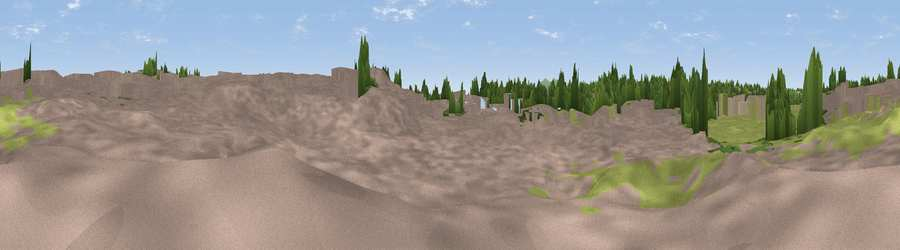

Viewpoint near Worcester
#45869 in England · top 100% of its area beats it · near Worcester · access?Where it is
The exact computed spot (SO 84608 55092). Click the marker for map links.
Public access: no public right of way or access land is recorded at this exact spot — it may be on private land. Computed from Natural England's CRoW access layer and OpenStreetMap rights of way — not the legal definitive map. Always verify locally.
The view, rendered

A 360° render of this exact spot computed from the terrain model, tree cover and land cover — summer colours, afternoon light, calibrated against photographs of famous viewpoints. Real trees, hedges and buildings will differ in detail.
The panorama
Grey silhouette: terrain skyline in each direction (720 bearings, Earth curvature and refraction included). Dashed green: skyline with trees (+15 m) and buildings (+8 m) as obstacles. Blue strip: how far the ground is visible on each bearing.
Where the view opens
Wedge length = distance to the farthest visible ground on that bearing (vegetation-aware). Rings at 10, 25 and 50 km.
What fills the view
52% built-up · 25% woodland · 20% grassland · 2% cropland · 1% water
Angular shares of the visible panorama (visual magnitude), not map area. Landscape diversity 0.50 (0–1 Shannon).
Key numbers
More beautiful places nearby
The staircase of upgrades: each row has a higher view potential than everything closer. Driving times are estimates from straight-line distance, calibrated against real road routing — check an actual route before setting out.
| Place | Direction | Drive | Score |
|---|---|---|---|
| Viewpoint near Worcester | ENE · 2 km | ~6 min | 54.7 |
| Viewpoint near Littleworth | SE · 4 km | ~9 min | 65.8 |
| Viewpoint near Storridge | WSW · 10 km | ~20 min | 70.5 |
| Viewpoint near Storridge | WSW · 11 km | ~20 min | 73.5 |
| Viewpoint near Martley | WNW · 11 km | ~20 min | 78.1 |
| Viewpoint near West Malvern | SW · 11 km | ~21 min | 81.4 |
| North Hill | SW · 12 km | ~22 min | 86.8 |
| Worcestershire Beacon | SW · 13 km | ~23 min | 87.1 |
52.19384, -2.22659 · source: osm viewpoint · position refined by local search. Computed location — check access rights before visiting.